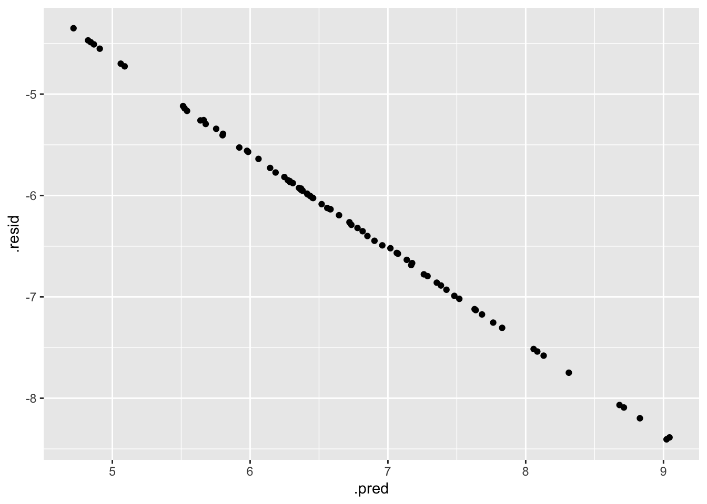

Downloading packages and data
library(nberwp) #to clean and arrange data
library(tidyverse)## ── Attaching packages ─────────────────────────────────────── tidyverse 1.3.1 ──## ✓ ggplot2 3.3.5 ✓ purrr 0.3.4
## ✓ tibble 3.1.6 ✓ dplyr 1.0.7
## ✓ tidyr 1.1.4 ✓ stringr 1.4.0
## ✓ readr 2.0.2 ✓ forcats 0.5.1## ── Conflicts ────────────────────────────────────────── tidyverse_conflicts() ──
## x dplyr::filter() masks stats::filter()
## x dplyr::lag() masks stats::lag()library(ggthemes) #for cool graphs
library(tidyr)
library(skimr)
library(janitor)##
## Attaching package: 'janitor'## The following objects are masked from 'package:stats':
##
## chisq.test, fisher.testlibrary(stats)
library(ggthemes)
library(ggalt)## Registered S3 methods overwritten by 'ggalt':
## method from
## grid.draw.absoluteGrob ggplot2
## grobHeight.absoluteGrob ggplot2
## grobWidth.absoluteGrob ggplot2
## grobX.absoluteGrob ggplot2
## grobY.absoluteGrob ggplot2library(RColorBrewer)
library(lubridate)##
## Attaching package: 'lubridate'## The following objects are masked from 'package:base':
##
## date, intersect, setdiff, unionlibrary(tidymodels)## Registered S3 method overwritten by 'tune':
## method from
## required_pkgs.model_spec parsnip## ── Attaching packages ────────────────────────────────────── tidymodels 0.1.4 ──## ✓ broom 0.7.10 ✓ rsample 0.1.1
## ✓ dials 0.0.10 ✓ tune 0.1.6
## ✓ infer 1.0.0 ✓ workflows 0.2.4
## ✓ modeldata 0.1.1 ✓ workflowsets 0.1.0
## ✓ parsnip 0.1.7 ✓ yardstick 0.0.8
## ✓ recipes 0.1.17## ── Conflicts ───────────────────────────────────────── tidymodels_conflicts() ──
## x scales::discard() masks purrr::discard()
## x dplyr::filter() masks stats::filter()
## x recipes::fixed() masks stringr::fixed()
## x dplyr::lag() masks stats::lag()
## x yardstick::spec() masks readr::spec()
## x recipes::step() masks stats::step()
## • Use tidymodels_prefer() to resolve common conflicts.library(rpart)##
## Attaching package: 'rpart'## The following object is masked from 'package:dials':
##
## prunelibrary(rpart.plot)
library(parallel)
library(doParallel)## Loading required package: foreach##
## Attaching package: 'foreach'## The following objects are masked from 'package:purrr':
##
## accumulate, when## Loading required package: iteratorslibrary(glmnet)## Loading required package: Matrix##
## Attaching package: 'Matrix'## The following objects are masked from 'package:tidyr':
##
## expand, pack, unpack## Loaded glmnet 4.1-3# Data from the Tidy Tuesday Github
marbles <- readr::read_csv('https://raw.githubusercontent.com/rfordatascience/tidytuesday/master/data/2020/2020-06-02/marbles.csv')## Rows: 256 Columns: 14## ── Column specification ────────────────────────────────────────────────────────
## Delimiter: ","
## chr (9): date, race, site, source, marble_name, team_name, pole, host, notes
## dbl (5): time_s, points, track_length_m, number_laps, avg_time_lap##
## ℹ Use `spec()` to retrieve the full column specification for this data.
## ℹ Specify the column types or set `show_col_types = FALSE` to quiet this message.Now for a little bit of data cleaning
skimr::skim(marbles)| Name | marbles |
| Number of rows | 256 |
| Number of columns | 14 |
| _______________________ | |
| Column type frequency: | |
| character | 9 |
| numeric | 5 |
| ________________________ | |
| Group variables | None |
Variable type: character
| skim_variable | n_missing | complete_rate | min | max | empty | n_unique | whitespace |
|---|---|---|---|---|---|---|---|
| date | 0 | 1.00 | 8 | 9 | 0 | 16 | 0 |
| race | 0 | 1.00 | 4 | 4 | 0 | 16 | 0 |
| site | 0 | 1.00 | 7 | 15 | 0 | 8 | 0 |
| source | 0 | 1.00 | 34 | 34 | 0 | 16 | 0 |
| marble_name | 0 | 1.00 | 4 | 9 | 0 | 32 | 0 |
| team_name | 0 | 1.00 | 6 | 16 | 0 | 16 | 0 |
| pole | 128 | 0.50 | 2 | 3 | 0 | 16 | 0 |
| host | 0 | 1.00 | 2 | 3 | 0 | 2 | 0 |
| notes | 249 | 0.03 | 37 | 100 | 0 | 7 | 0 |
Variable type: numeric
| skim_variable | n_missing | complete_rate | mean | sd | p0 | p25 | p50 | p75 | p100 | hist |
|---|---|---|---|---|---|---|---|---|---|---|
| time_s | 3 | 0.99 | 190.84 | 169.13 | 17.76 | 28.40 | 36.28 | 338.16 | 492.01 | ▇▁▁▇▁ |
| points | 128 | 0.50 | 6.45 | 7.74 | 0.00 | 0.00 | 3.00 | 11.25 | 26.00 | ▇▂▂▁▁ |
| track_length_m | 0 | 1.00 | 13.22 | 0.95 | 11.90 | 12.62 | 13.02 | 14.13 | 14.55 | ▅▅▂▁▇ |
| number_laps | 0 | 1.00 | 6.25 | 5.53 | 1.00 | 1.00 | 5.00 | 10.25 | 16.00 | ▇▁▃▂▂ |
| avg_time_lap | 3 | 0.99 | 29.70 | 5.55 | 17.76 | 25.94 | 30.05 | 33.65 | 41.62 | ▃▆▇▇▂ |
str(marbles)## spec_tbl_df [256 × 14] (S3: spec_tbl_df/tbl_df/tbl/data.frame)
## $ date : chr [1:256] "15-Feb-20" "15-Feb-20" "15-Feb-20" "15-Feb-20" ...
## $ race : chr [1:256] "S1Q1" "S1Q1" "S1Q1" "S1Q1" ...
## $ site : chr [1:256] "Savage Speedway" "Savage Speedway" "Savage Speedway" "Savage Speedway" ...
## $ source : chr [1:256] "https://youtu.be/JtsQ_UydjEI?t=356" "https://youtu.be/JtsQ_UydjEI?t=356" "https://youtu.be/JtsQ_UydjEI?t=356" "https://youtu.be/JtsQ_UydjEI?t=356" ...
## $ marble_name : chr [1:256] "Clementin" "Starry" "Momo" "Yellow" ...
## $ team_name : chr [1:256] "O'rangers" "Team Galactic" "Team Momo" "Mellow Yellow" ...
## $ time_s : num [1:256] 28.1 28.4 28.4 28.7 28.7 ...
## $ pole : chr [1:256] "P1" "P2" "P3" "P4" ...
## $ points : num [1:256] NA NA NA NA NA NA NA NA NA NA ...
## $ track_length_m: num [1:256] 12.8 12.8 12.8 12.8 12.8 ...
## $ number_laps : num [1:256] 1 1 1 1 1 1 1 1 1 1 ...
## $ avg_time_lap : num [1:256] 28.1 28.4 28.4 28.7 28.7 ...
## $ host : chr [1:256] "No" "No" "No" "No" ...
## $ notes : chr [1:256] NA NA NA NA ...
## - attr(*, "spec")=
## .. cols(
## .. date = col_character(),
## .. race = col_character(),
## .. site = col_character(),
## .. source = col_character(),
## .. marble_name = col_character(),
## .. team_name = col_character(),
## .. time_s = col_double(),
## .. pole = col_character(),
## .. points = col_double(),
## .. track_length_m = col_double(),
## .. number_laps = col_double(),
## .. avg_time_lap = col_double(),
## .. host = col_character(),
## .. notes = col_character()
## .. )
## - attr(*, "problems")=<externalptr># now to fix this funky date format
marbles <- marbles %>% separate(date, sep="-", into = c("day", "month", "year"))
marbles$month <-match(marbles$month, month.abb)
marbles$date <-with(marbles,paste(month, day, year, sep="/"),"%m/%d/%y")
marbles$date <-as.Date(marbles$date, format="%m/%d/%y")
# Getting rid of unwanted variables
marbles<- subset(marbles, select = -c(source, host, notes, day, month, year))
marbles <- marbles[-c(64, 128, 192), ] # deleting row 192 because that is the only time a marble did not compete for a reason
# I want to compare speed across races, so I will create a second per meter variable
marbles$mps <- (marbles$track_length_m * marbles$number_laps)/ marbles$time_s
# ranking the place by time
marbles = marbles %>% group_by(race) %>% mutate(rank = rank(time_s))
# creating a season summary table
season <- marbles %>%
mutate_if(is.numeric, funs(ifelse(is.na(.), 0, .))) %>%
group_by(team_name, marble_name) %>%
summarise(PR = min(mps), PW = max(mps), SPM = mean(mps), Rank = mean(rank), Points = sum(points))## `mutate_if()` ignored the following grouping variables:
## Column `race`## Warning: `funs()` was deprecated in dplyr 0.8.0.
## Please use a list of either functions or lambdas:
##
## # Simple named list:
## list(mean = mean, median = median)
##
## # Auto named with `tibble::lst()`:
## tibble::lst(mean, median)
##
## # Using lambdas
## list(~ mean(., trim = .2), ~ median(., na.rm = TRUE))
## This warning is displayed once every 8 hours.
## Call `lifecycle::last_lifecycle_warnings()` to see where this warning was generated.## `summarise()` has grouped output by 'team_name'. You can override using the `.groups` argument.# model dataset
model <- subset(marbles, select = -c(1:4, 6, 7, 11))
str(model) # rank should be a factor## tibble [253 × 6] (S3: tbl_df/tbl/data.frame)
## $ time_s : num [1:253] 28.1 28.4 28.4 28.7 28.7 ...
## $ track_length_m: num [1:253] 12.8 12.8 12.8 12.8 12.8 ...
## $ number_laps : num [1:253] 1 1 1 1 1 1 1 1 1 1 ...
## $ avg_time_lap : num [1:253] 28.1 28.4 28.4 28.7 28.7 ...
## $ mps : num [1:253] 0.456 0.452 0.451 0.446 0.446 ...
## $ rank : num [1:253] 1 2 3 4 5 6 7 8 9 10 ...model$rank <- as.factor(model$rank)
hist(model$mps,col='red') # ok distribution looks goodFirst lets look at the overall performance by score over time
# Marble stats by team
Table1 <- table1::table1(~mps + rank + points + avg_time_lap | team_name, data = marbles)## Warning in .table1.internal(x = x, labels = labels, groupspan = groupspan, :
## Table has 17 columns. Are you sure this is what you want?Table1| Balls of Chaos (N=16) |
Green Ducks (N=16) |
Hazers (N=16) |
Hornets (N=16) |
Limers (N=15) |
Mellow Yellow (N=16) |
Midnight Wisps (N=15) |
O'rangers (N=16) |
Raspberry Racers (N=16) |
Rojo Rollers (N=16) |
Savage Speeders (N=16) |
Snowballs (N=16) |
Team Galactic (N=16) |
Team Momo (N=16) |
Team Primary (N=15) |
Thunderbolts (N=16) |
Overall (N=253) |
|
|---|---|---|---|---|---|---|---|---|---|---|---|---|---|---|---|---|---|
| mps | |||||||||||||||||
| Mean (SD) | 0.451 (0.0691) | 0.458 (0.0657) | 0.465 (0.0722) | 0.451 (0.0651) | 0.452 (0.0704) | 0.463 (0.0739) | 0.463 (0.0644) | 0.461 (0.0671) | 0.454 (0.0600) | 0.452 (0.0715) | 0.463 (0.0781) | 0.457 (0.0673) | 0.455 (0.0654) | 0.457 (0.0718) | 0.455 (0.0845) | 0.457 (0.0685) | 0.457 (0.0679) |
| Median [Min, Max] | 0.432 [0.356, 0.616] | 0.439 [0.357, 0.614] | 0.448 [0.357, 0.650] | 0.439 [0.353, 0.631] | 0.424 [0.359, 0.617] | 0.442 [0.361, 0.664] | 0.449 [0.358, 0.616] | 0.444 [0.364, 0.613] | 0.447 [0.357, 0.590] | 0.428 [0.359, 0.646] | 0.438 [0.351, 0.667] | 0.438 [0.354, 0.614] | 0.444 [0.357, 0.607] | 0.436 [0.358, 0.657] | 0.442 [0.350, 0.670] | 0.429 [0.362, 0.621] | 0.438 [0.350, 0.670] |
| rank | |||||||||||||||||
| Mean (SD) | 9.84 (5.10) | 7.63 (3.65) | 5.41 (3.84) | 11.3 (3.07) | 10.0 (4.76) | 7.13 (3.93) | 7.90 (4.02) | 7.38 (5.08) | 9.25 (3.71) | 9.63 (3.20) | 5.88 (4.66) | 8.63 (4.84) | 9.19 (4.89) | 7.75 (4.92) | 9.00 (6.34) | 8.81 (4.20) | 8.41 (4.57) |
| Median [Min, Max] | 10.8 [1.00, 15.0] | 8.00 [1.00, 13.0] | 4.50 [1.00, 15.0] | 11.5 [7.00, 16.0] | 10.0 [3.50, 16.0] | 7.50 [1.00, 15.0] | 7.00 [1.00, 14.0] | 7.00 [1.00, 15.0] | 8.50 [3.00, 16.0] | 9.50 [5.00, 15.0] | 5.50 [1.00, 16.0] | 9.50 [1.00, 15.0] | 10.0 [1.00, 15.0] | 6.50 [1.00, 16.0] | 7.00 [1.00, 16.0] | 9.50 [2.00, 15.0] | 8.00 [1.00, 16.0] |
| points | |||||||||||||||||
| Mean (SD) | 5.75 (8.96) | 8.00 (9.68) | 11.8 (8.41) | 1.00 (2.14) | 3.57 (5.77) | 5.50 (5.66) | 4.86 (6.34) | 8.63 (9.23) | 3.38 (3.07) | 4.00 (4.11) | 12.6 (7.96) | 8.25 (9.48) | 8.00 (10.7) | 6.13 (8.39) | 7.71 (7.52) | 6.13 (8.36) | 6.61 (7.77) |
| Median [Min, Max] | 0.500 [0, 25.0] | 3.00 [0, 26.0] | 14.0 [0, 25.0] | 0 [0, 6.00] | 0 [0, 12.0] | 4.00 [0, 15.0] | 1.00 [0, 15.0] | 6.00 [0, 25.0] | 3.00 [0, 8.00] | 2.50 [0, 10.0] | 13.0 [0, 25.0] | 5.00 [0, 25.0] | 4.00 [0, 25.0] | 4.00 [0, 25.0] | 12.0 [0, 18.0] | 1.00 [0, 19.0] | 4.00 [0, 26.0] |
| Missing | 8 (50.0%) | 8 (50.0%) | 8 (50.0%) | 8 (50.0%) | 8 (53.3%) | 8 (50.0%) | 8 (53.3%) | 8 (50.0%) | 8 (50.0%) | 8 (50.0%) | 8 (50.0%) | 8 (50.0%) | 8 (50.0%) | 8 (50.0%) | 8 (53.3%) | 8 (50.0%) | 128 (50.6%) |
| avg_time_lap | |||||||||||||||||
| Mean (SD) | 30.1 (5.77) | 29.6 (5.55) | 29.2 (5.63) | 30.0 (5.54) | 30.2 (5.61) | 29.4 (5.66) | 29.1 (5.33) | 29.4 (5.58) | 29.7 (5.45) | 30.0 (5.73) | 29.4 (5.98) | 29.7 (5.74) | 29.8 (5.69) | 29.7 (5.62) | 30.2 (6.81) | 29.7 (5.58) | 29.7 (5.55) |
| Median [Min, Max] | 31.0 [19.3, 40.9] | 29.6 [19.4, 40.8] | 29.7 [18.3, 40.8] | 30.0 [18.9, 41.2] | 30.8 [19.3, 40.5] | 29.8 [17.9, 40.3] | 30.0 [19.3, 40.6] | 29.6 [19.4, 40.0] | 30.3 [20.2, 40.8] | 30.1 [18.4, 40.6] | 30.0 [17.9, 41.4] | 29.8 [19.4, 41.1] | 30.3 [19.6, 40.7] | 30.0 [18.1, 40.6] | 29.8 [17.8, 41.6] | 30.2 [19.2, 40.2] | 30.1 [17.8, 41.6] |
marbles$marble_name = with(marbles, reorder(marble_name, rank))
P1 <- marbles %>%
ggplot(aes(x = marble_name, y = rank)) +
geom_bar(stat="identity") +
facet_wrap(~date, scales = 'free') +
ggtitle("Marble Rank by Race") +
coord_flip() +
scale_color_ptol("") +
theme_minimal()
print(P1)season$marble_name = with(season, reorder(marble_name, Points))
P2 <- season %>%
ggplot(aes(x = marble_name, y = Points, fill=marble_name)) +
geom_bar(stat="identity", alpha=.6, width=.4) +
coord_flip() +
xlab("") +
ggtitle("Season total Marble Points") +
scale_color_ptol("") +
theme_minimal()
P2marbles$marble_name = with(marbles, reorder(marble_name, mps))
P3 <- marbles %>%
ggplot( aes(x=marble_name, y=mps, fill=marble_name)) +
geom_violin() +
xlab("") +
ggtitle("Season MPS distribution") +
theme(legend.position="none") +
scale_color_ptol("") +
theme_minimal()
P3### Season Best and Wost MPS
P4<- season %>% ggplot(aes(y = marble_name, x = PR, xend =PW )) +
geom_dumbbell(size = 1.0,
size_x = 3,
size_xend = 3,
colour = "grey",
colour_x = "blue",
colour_xend = "red") +
theme_minimal() +
scale_color_ptol("") +
labs(title = "Personal Best and Worst MPS Times",
x = "Meters Per Second (MPS)", y = "Team Name")
P4# Investigation on Smoggy from the Hazers Team Regrettably we must inform you that this years 3rd place winner, Smoggy has been accused of lead weighting - a tactic that was outlawed in the 2018 Marbula One tournament. After chemical analysis, Smoggy and the Hazers team will be disqualified from this years leader board. Lets take a look at the Hazer Team Stats.
hazers <- subset(marbles, team_name == "Hazers")
P5 <- ggplot() +
geom_line(data = hazers, aes(x = date, y = avg_time_lap, color="Smoggy")) +
geom_line(data = marbles, aes(x = date, y = avg_time_lap, color="Group Average"), linetype=3) +
theme_minimal() +
scale_color_ptol("") +
labs(title = "Plot 1: Avg Time- Court Evidence for Smoggy v State",
x = " ", y = " ")
P5 P6 <- ggplot() +
geom_line(data = hazers, aes(x = date, y = mps, color="Smoggy")) +
geom_line(data = marbles, aes(x = date, y = mps, color="Group Average"), linetype=3) +
theme_minimal() +
scale_color_ptol("") +
labs(title = "Plot 2: MPS- Court Evidence for Smoggy v State",
x = " ", y = " ")
P6_______________________________________________________________________________ # Creating models We are going to try out 2 different models 1) Generalized linear model 2) LASSO model 3) Ridge Regression
First lets create a testing and training set ### Data splitting and CV folds Here we are going to split the data randomly into training and testing subsets - Training data will be used to fit the model. - Testing set will be used to evaluate the model.
# Setting a seed for random number generation so if this analysis is reproduced, the same random set will be generated
set.seed(123)
# Subsetting 70% of data into training and 20% of data into testing
# We using Body Temp to stratify
data_split <- initial_split(model, prop = .7, strata = "mps") # dont want all the winners in one category
# Creating training data
train_data <- training(data_split)
# Creating testing data
test_data <- testing(data_split)
# 5-fold cross-validation, 5x repeated
# Creating a resample object for our traiinng data
set.seed(123)
folds <- vfold_cv(train_data, v = 5, repeats = 5, strata = "mps") # mps is my continuous outcomeSetting up lr.mod that will be used for the rest of the models
lr.mod <- linear_reg() %>%
set_engine("lm") %>%
set_mode("regression")#Setting up the linear model
D.rec <- recipe(mps ~ ., data = train_data) %>%
step_dummy(all_nominal()) %>%
step_scale(mps) #scaling mps
# Create workflow
D.wflow <- workflow() %>%
add_model(lr.mod) %>%
add_recipe(D.rec)
# Fit model to training data
D.fit <-
D.wflow %>%
fit(data = train_data)
# evaluate
D.fit %>%
extract_fit_parsnip() %>%
tidy()## # A tibble: 22 × 5
## term estimate std.error statistic p.value
## <chr> <dbl> <dbl> <dbl> <dbl>
## 1 (Intercept) 8.60 0.353 24.4 1.04e-54
## 2 time_s 0.00667 0.000651 10.3 4.02e-19
## 3 track_length_m 0.457 0.0364 12.5 2.72e-25
## 4 number_laps -0.200 0.0187 -10.7 2.20e-20
## 5 avg_time_lap -0.268 0.00780 -34.4 4.26e-74
## 6 rank_X2 0.00420 0.0869 0.0484 9.61e- 1
## 7 rank_X3 0.0162 0.0832 0.195 8.46e- 1
## 8 rank_X3.5 -0.0201 0.153 -0.131 8.96e- 1
## 9 rank_X4 -0.0229 0.0875 -0.262 7.94e- 1
## 10 rank_X5 0.00788 0.0872 0.0903 9.28e- 1
## # … with 12 more rows# Create null formula
N.rec <- recipe(mps ~ 1., data = train_data)
# set workflow
N.train.wflow <-
workflow() %>%
add_model(lr.mod) %>%
add_recipe(N.rec)
# fitting
N.train.fit <-
N.train.wflow %>%
fit(data = train_data)
# usual
N.train.fit %>%
extract_fit_parsnip() %>%
tidy()## # A tibble: 1 × 5
## term estimate std.error statistic p.value
## <chr> <dbl> <dbl> <dbl> <dbl>
## 1 (Intercept) 0.457 0.00514 88.9 1.57e-147# RMSE
predict(N.train.fit, train_data)## # A tibble: 176 × 1
## .pred
## <dbl>
## 1 0.457
## 2 0.457
## 3 0.457
## 4 0.457
## 5 0.457
## 6 0.457
## 7 0.457
## 8 0.457
## 9 0.457
## 10 0.457
## # … with 166 more rowsN.train.aug <- augment(N.train.fit, train_data)
N.train.aug %>% select(mps, .pred) ## # A tibble: 176 × 2
## mps .pred
## <dbl> <dbl>
## 1 0.411 0.457
## 2 0.395 0.457
## 3 0.394 0.457
## 4 0.393 0.457
## 5 0.391 0.457
## 6 0.390 0.457
## 7 0.387 0.457
## 8 0.387 0.457
## 9 0.383 0.457
## 10 0.382 0.457
## # … with 166 more rowsN.train.aug %>% rmse(truth = mps, .pred)## # A tibble: 1 × 3
## .metric .estimator .estimate
## <chr> <chr> <dbl>
## 1 rmse standard 0.0680# RMSE = 0.06801068 # fitting
predict(N.train.fit, test_data)## # A tibble: 77 × 1
## .pred
## <dbl>
## 1 0.457
## 2 0.457
## 3 0.457
## 4 0.457
## 5 0.457
## 6 0.457
## 7 0.457
## 8 0.457
## 9 0.457
## 10 0.457
## # … with 67 more rowsN.test.aug <- augment(N.train.fit, test_data)
N.test.aug %>% select(mps, .pred) ## # A tibble: 77 × 2
## mps .pred
## <dbl> <dbl>
## 1 0.456 0.457
## 2 0.452 0.457
## 3 0.437 0.457
## 4 0.434 0.457
## 5 0.412 0.457
## 6 0.395 0.457
## 7 0.383 0.457
## 8 0.380 0.457
## 9 0.377 0.457
## 10 0.468 0.457
## # … with 67 more rowsN.test.aug %>% #taking the root-mean square error of the model
rmse(truth = mps, .pred)## # A tibble: 1 × 3
## .metric .estimator .estimate
## <chr> <chr> <dbl>
## 1 rmse standard 0.0672# RMSE = 0.06721659 ## Tuning hyperparameters
tune_spec <-
decision_tree(cost_complexity = tune(),
tree_depth = tune()) %>%
set_engine("rpart") %>%
set_mode("regression")
tune_spec # We will come back to these parameters## Decision Tree Model Specification (regression)
##
## Main Arguments:
## cost_complexity = tune()
## tree_depth = tune()
##
## Computational engine: rpart# setting workflow
tree.wflow <- workflow() %>%
add_model(tune_spec) %>%
add_recipe(D.rec)# Create a grid
cores <- parallel::detectCores()
cores## [1] 4ncores = 4
cl <- makePSOCKcluster(ncores)
registerDoParallel(cl)
tree_grid <- grid_regular(cost_complexity(),
tree_depth(),
levels = 5)
# tuning
tree_res <- tree.wflow %>%
tune_grid(resamples = folds, grid = tree_grid)
tree_res %>% collect_metrics()## # A tibble: 50 × 8
## cost_complexity tree_depth .metric .estimator mean n std_err .config
## <dbl> <int> <chr> <chr> <dbl> <int> <dbl> <chr>
## 1 0.0000000001 1 rmse standard 0.614 25 0.0136 Preprocess…
## 2 0.0000000001 1 rsq standard 0.632 25 0.0106 Preprocess…
## 3 0.0000000178 1 rmse standard 0.614 25 0.0136 Preprocess…
## 4 0.0000000178 1 rsq standard 0.632 25 0.0106 Preprocess…
## 5 0.00000316 1 rmse standard 0.614 25 0.0136 Preprocess…
## 6 0.00000316 1 rsq standard 0.632 25 0.0106 Preprocess…
## 7 0.000562 1 rmse standard 0.614 25 0.0136 Preprocess…
## 8 0.000562 1 rsq standard 0.632 25 0.0106 Preprocess…
## 9 0.1 1 rmse standard 0.614 25 0.0136 Preprocess…
## 10 0.1 1 rsq standard 0.632 25 0.0106 Preprocess…
## # … with 40 more rows# turn off parallel cluster
stopCluster(cl)tree_res %>%
collect_metrics() %>%
mutate(tree_depth = factor(tree_depth)) %>%
ggplot(aes(cost_complexity, mean, color = tree_depth)) +
geom_line(size = 1.5, alpha = 0.6) +
geom_point(size = 2) +
facet_wrap(~ .metric, scales = "free", nrow = 2) +
scale_x_log10(labels = scales::label_number()) +
scale_color_viridis_d(option = "plasma", begin = .9, end = 0)# Lets check out the top 5
tree_res %>% show_best("rmse")## # A tibble: 5 × 8
## cost_complexity tree_depth .metric .estimator mean n std_err .config
## <dbl> <int> <chr> <chr> <dbl> <int> <dbl> <chr>
## 1 0.0000000001 8 rmse standard 0.259 25 0.00917 Preprocesso…
## 2 0.0000000178 8 rmse standard 0.259 25 0.00917 Preprocesso…
## 3 0.00000316 8 rmse standard 0.259 25 0.00917 Preprocesso…
## 4 0.0000000001 11 rmse standard 0.259 25 0.00917 Preprocesso…
## 5 0.0000000178 11 rmse standard 0.259 25 0.00917 Preprocesso…# Now to pull out the best set of hyperparameter values for our decision tree model
best_tree <- tree_res %>% select_best("rmse")
# finalize workflow
final_wf <- tree.wflow %>% finalize_workflow(best_tree)
# final fit
final_fit <- final_wf %>% fit(data = train_data)
final_fit## ══ Workflow [trained] ══════════════════════════════════════════════════════════
## Preprocessor: Recipe
## Model: decision_tree()
##
## ── Preprocessor ────────────────────────────────────────────────────────────────
## 2 Recipe Steps
##
## • step_dummy()
## • step_scale()
##
## ── Model ───────────────────────────────────────────────────────────────────────
## n= 176
##
## node), split, n, deviance, yval
## * denotes terminal node
##
## 1) root 176 175.00000000 6.697913
## 2) avg_time_lap>=26.11 130 36.05376000 6.228446
## 4) avg_time_lap>=32.42 58 7.47878700 5.793831
## 8) avg_time_lap>=37.035 11 0.10836970 5.250606 *
## 9) avg_time_lap< 37.035 47 3.36467900 5.920968
## 18) track_length_m< 14.215 26 0.44794260 5.715494
## 36) time_s>=325.15 18 0.06109299 5.655044 *
## 37) time_s< 325.15 8 0.17307930 5.851506 *
## 19) track_length_m>=14.215 21 0.45994480 6.175366
## 38) avg_time_lap>=34.415 7 0.05028384 5.986830 *
## 39) avg_time_lap< 34.415 14 0.03643271 6.269633 *
## 5) avg_time_lap< 32.42 72 8.79396900 6.578552
## 10) time_s>=29.925 51 2.45283700 6.422064
## 20) track_length_m>=12.43 39 1.62091200 6.353963
## 40) track_length_m< 13.625 30 0.23420380 6.264969
## 80) avg_time_lap>=30.68 9 0.05438351 6.189007 *
## 81) avg_time_lap< 30.68 21 0.10563120 6.297524
## 162) track_length_m< 13.02 14 0.03521699 6.259880 *
## 163) track_length_m>=13.02 7 0.01089504 6.372814 *
## 41) track_length_m>=13.625 9 0.35711570 6.650610 *
## 21) track_length_m< 12.43 12 0.06322134 6.643392 *
## 11) time_s< 29.925 21 2.05913500 6.958595
## 22) track_length_m< 13.02 7 0.37816590 6.622303 *
## 23) track_length_m>=13.02 14 0.49349810 7.126741 *
## 3) avg_time_lap< 26.11 46 29.32136000 8.024669
## 6) time_s>=21.5 29 1.54729000 7.486443
## 12) time_s>=24.36 22 0.17383850 7.379369
## 24) time_s>=25.865 14 0.06531379 7.343423 *
## 25) time_s< 25.865 8 0.05877888 7.442274 *
## 13) time_s< 24.36 7 0.32851020 7.822961 *
## 7) time_s< 21.5 17 5.04212400 8.942820 *tree_res %>% show_best("rmse", n = 1)## # A tibble: 1 × 8
## cost_complexity tree_depth .metric .estimator mean n std_err .config
## <dbl> <int> <chr> <chr> <dbl> <int> <dbl> <chr>
## 1 0.0000000001 8 rmse standard 0.259 25 0.00917 Preprocesso…RMSE = 0.2588305
rpart.plot(extract_fit_parsnip(final_fit)$fit)## Warning: Cannot retrieve the data used to build the model (so cannot determine roundint and is.binary for the variables).
## To silence this warning:
## Call rpart.plot with roundint=FALSE,
## or rebuild the rpart model with model=TRUE.# set workflow
lasso.mod <- linear_reg(mode = "regression", penalty = tune(), mixture = 1) %>%
set_engine("glmnet")
lasso.wflow <- workflow() %>%
add_model(lasso.mod) %>%
add_recipe(D.rec)cores <- parallel::detectCores()
cores## [1] 4ncores = 4
cl <- makePSOCKcluster(ncores)
registerDoParallel(cl)
# creating grid and tuning
lr_reg_grid <- tibble(penalty = 10^seq(-3, 0, length.out = 30))
# tuning on training data
lasso.res <- lasso.wflow %>%
tune_grid(resamples = folds,
grid = lr_reg_grid,
control = control_grid(save_pred = TRUE),
metrics = metric_set(rmse))
lasso.res %>% autoplot()# turn off parallel cluster
stopCluster(cl)lasso.top.models <- lasso.res %>%
select_best("rmse")
lasso.res %>% show_best(n=1)## # A tibble: 1 × 7
## penalty .metric .estimator mean n std_err .config
## <dbl> <chr> <chr> <dbl> <int> <dbl> <chr>
## 1 0.001 rmse standard 0.203 25 0.00600 Preprocessor1_Model01# finalize workflow with the best model
best.lasso.wflow <- lasso.wflow %>%
finalize_workflow(lasso.top.models)
# fitting best performing model
best.lasso.fit <- best.lasso.wflow %>%
fit(data = train_data)RMSE = 0.207073
This code is borrowed from Dr. Handel
x <- best.lasso.fit$fit$fit$fit
plot(x, "lambda")Let us figure out what type of model we should watch. Here are the RMSE of all: - Null: RMSE = 0.06721659 # Maybe because I did not normalize the outcome like I did in other models? - Tree Model: RMSE = 0.2588305 - LASSO: RMSE = 0.207073
Looks like tree model
cl <- makePSOCKcluster(ncores)
registerDoParallel(cl)
# use test data
final.mod <- best.lasso.wflow %>% last_fit(data_split) # using test data
final.mod %>% collect_metrics()## # A tibble: 2 × 4
## .metric .estimator .estimate .config
## <chr> <chr> <dbl> <chr>
## 1 rmse standard 0.213 Preprocessor1_Model1
## 2 rsq standard 0.956 Preprocessor1_Model1# turn off parallel cluster
stopCluster(cl)RMSE = 0.213288, different from null, but similar to LASSO ## Visualization
# residuals
final.res <- final.mod %>%
augment() %>%
select(.pred, mps) %>%
mutate(.resid = mps - .pred)
# training vs truth
ggplot(final.res, aes(x = mps, y = .pred)) +
geom_point()# residuals vs trth
ggplot(final.res, aes(y = .resid, x = .pred)) +
geom_point() 
#compare to null model